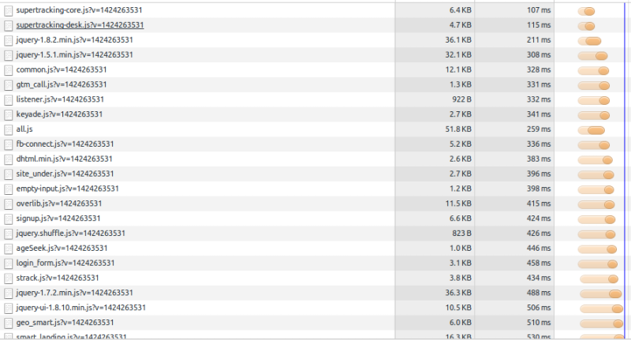
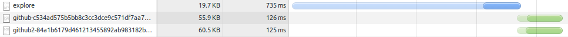
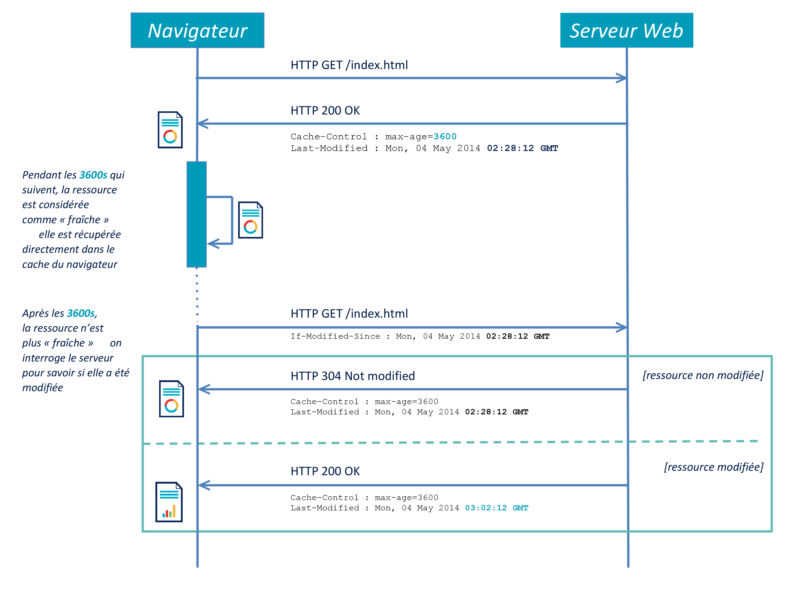
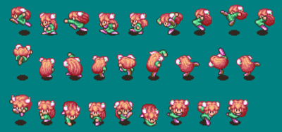

Bonnes pratiques webperfs
Timothée Carry
- Consultant Octo Technology
- Spécialiste en Web Front
- Équipe Sunrise, 3e étage
- @pixelastic à l'extérieur
Pourquoi ?
On ne remarque pas quand c'est rapide,
mais on ressent quand c'est lent.
- Lenteur ressentie au bout de 4s en 2008, 2s en 2015
- Nouvelle génération habituée à l'instantané
- Explosion du nombre de terminaux mobiles
Sommaire
-
Concatenation
-
Compression
-
Cache
-
Images
-
Cheat
Bonus : Sprites, JavaScript, CSS, Cookies.
Concatenation
Télécharger moins de fichiers
meetic.fr

github.com

Goulot d'étranglement
- TCP Slow-start
- Overhead SSL
- Maximum de connections parallèles
Compression
Télécharger des fichiers plus légers
GZIP : La formule magique
- Gain de 66% en moyenne
- Assets textuels : HTML, CSS, JavaScript, XML, JSON
- Serveur : Apache, Lighttpd, Nginx, IIS
- Browser : IE5.5+
Apache
<IfModule mod_deflate.c>
<IfModule mod_filter.c>
AddOutputFilterByType DEFLATE "application/javascript" "application/json" \
"text/css" "text/html" "text/xml" [...]
</IfModule>
</IfModule>Lighttpd
server.modules += ( "mod_compress" )
compress.filetype = ("application/javascript", "application/json", \
"text/css", "text/html", "text/xml", [...] )nginx
gzip on;
gzip_comp_level 6;
gzip_types application/javascript application/json text/css text/html text/xml [...]; Minification
Cure d'amaigrissement secondaire
Enlever le surpoids
En webperf, tout ce que vous avez écrit sera téléchargé et pourra être utilisé contre vous.
- Suppression
- Mutualisation
- Obfuscation
Spécifique à chaque langage
cleancss
.i-btn-1{background:url(../../../../img/themes/aurora/common/buttons.png) 0 -1035px repeat-x;border:1px solid #266099;color:#fff;cursor:pointer;display:inline-block;font-size:13px;font-weight:700;height:24px;line-height:24px;padding:0 10px;text-align:center;text-decoration:none;text-shadow:1px 1px 1px #3c90e3}buttons.css
15Ko ⇒ 1.6Ko ⇒ 1.1Ko
uglifyjs
(function(){var method;var noop=function(){};var methods=["assert","clear","count","debug","dir","dirxml","error","exception","group","groupCollapsed","groupEnd","info","log","markTimeline","profile","profileEnd","table","time","timeEnd","timeStamp","trace","warn"];var length=methods.length;var console=window.console=window.consolecommon.js
43Ko ⇒ 11Ko ⇒ 7.2Ko
html-minifier
<body><div class=i-body><div class=i-clearer></div><div class=i-nav><div class=i-header-wrapper><div class="i-container i-clearfix"><div class="i-logo i-png"></div><div><div class="i-login-form-default i-login-form-twoline" id=i_login><div class=i-login-form-left><label class="i-label i-member-login" for=txtHandle>Déjà Membre</label>index.html
64Ko ⇒ 18Ko ⇒ 16Ko
Cache
Télécharger moins souvent
Fraicheur
- Date limite de consommation
- Rapide, pas de requête si encore frais
-
Deux headers
Expires: Thu, 04 May 2014 20:00:00 GMT✘Cache-Control: max-age=3600, must-revalidate✔
Validation
-
Vérification que le client possède la dernière version
- Oui : 304 - Not Modified
- Non: 200 - OK
- Évite téléchargement inutile
-
Deux couples de headers
Last-Modified: Mon, 04 May 2014 02:28:12 GMT/If-Modified-Since✔ETag: "3e86-410-3596fbbc"/If-None-Match✘

Invalidation
There are only two hard things in Computer Science: cache invalidation and naming things.
- Cache max (1 an)
-
Nouvelles urls (timestamp, hash, etc)
- github2-c9b5fd6520f5ab77dd823b1b2c81ff9c461b1374.css
- github-14e2a44e296739b8ec8d7763e88ed307a6d424e0.js
Récapitulatif
URL significative
- ex: HTML, API
- Fraicheur faible (minutes, heures)
- Validation
Last-Modified
Url non-significative
- ex: CSS, JavaScript, Images, Fonts
- Fraicheur maximum (1 an)
- Hash dans l'url
- Nouvelle version = nouvelle url
Images
Poids lourd de la page
- +50% du poids des pages (30% sur meetic.fr)
- 800Ko en moyenne (1.3Mo sur meetic.fr)
Différents formats,
différents usages
- jpg : photos
- png : transparence
- svg : vectoriel
- gif : lolcats
JPG
Deux compressions
494Ko
Lossless : suppression de metadatas
- Orientation, exposition, flash, focale, etc
- Date, coordonnées GPS
- Modèle, marque de l'appareil
- Aperçu, historique
- Tags, commentaires
exiftool
File Size : 494 kB
Image Size : 1920x1265
File Type : JPEG
MIME Type : image/jpeg
Exif Byte Order : Little-endian (Intel, II)
XMP Toolkit : Adobe XMP Core 5.3-c011 66.145661, 2012/02/06-14:56:27
Original Document ID : xmp.did:999DEC701EB0E311801EFDD03E7C1154
Document ID : xmp.did:6C302F067BD111E4A0FFFBC0293A508B
Instance ID : xmp.iid:6C302F057BD111E4A0FFFBC0293A508B
Creator Tool : Adobe Photoshop CS6 (Windows)
Derived From Instance ID : xmp.iid:25D692D731CB11E4BB03A7E70526CA15
Derived From Document ID : xmp.did:25D692D831CB11E4BB03A7E70526CA15
DCT Encode Version : 100
APP14 Flags 0 : [14], Encoded with Blend=1 downsampling
APP14 Flags 1 : (none)
Color Transform : YCbCr
Encoding Process : Baseline DCT, Huffman coding
Bits Per Sample : 8
Color Components : 3
Y Cb Cr Sub Sampling : YCbCr4:4:4 (1 1)jpegtran -optimize -copy none
494Ko ⇒ 493Ko
Lossy : suppression d'informations
- Moins de détails
- Limite de la perception humaine
- Apparition d'artefacts
jpegotim -m80 --strip-all
cjpeg-dssim jpegoptim
-
-m90, 342Ko, 0.000528 -
-m80, 219Ko, 0.001259 -
-m70, 172Ko, 0.002076 -
-m60, 141Ko, 0.003032 -
-m50, 121Ko, 0.003785 -
-m40, 104Ko, 0.005191 -
-m30, 86Ko, 0.007569 -
-m20, 64Ko, 0.013038 -
-m10, 38Ko, 0.034276
493Ko ⇒ 137Ko
Cheat
Tout le monde le fait...
Faire illusion
- Feedback en avance (Instagram)
- Illusion d'optique (Gmail)
- Spinner plus rapide (Firefox)
- Spinner iOS (Facebook)
Questions ?
Sprites
Concaténation d'images

Secret of Mana
On joue sur background-position en CSS
a {
display:block;
width:15px;
height:15px;
background:url(image.png) 0px 0px no-repeat;
}
a:hover {
background-position:0px -15px;
}grunt spritely, Compass, www.spritecow.com
JavaScript
Téléchargement bloquant
<script>bloque le parsing- Mettre en bas de page, avant
</body> asyncsur scripts indépendants- Script1 charge script2 (pub, tracking, sharing)
Langage non-compilé
- Code écrit = code téléchargé = code exécuté
- Utiliser les builds sur mesure (jQuery, Bootstrap, etc)
- microjs.com
CSS
Repaints et Reflows
- Repaint : Changer la couleur des pixels
- Reflow : Changer les dimensions des éléments
- csstriggers.com
Limiter les reflows
- CSS en haut de page
- Insérer dans le DOM en batch
- Taille des images dans le HTML
border: 1px solid transparent
Le parseur CSS,
comment ça marche ?
- Contre-intuitif
- Boucle sur tous les éléments
- Lecture de droite à gauche des sélecteurs
- Sélecteur clé (à droite) doit donc être le plus précis
Lecture de droite à gauche
<div id="header">
<h1>Company</h1>
<ul id="menu">
<li><a href="#">AAA</a></li>
<li><a href="#" class="menu-item">BBB</a></li>
</ul>
</div>
<div id="content">
<ul>
<li><a href="#">CCC</a></li>
<li><a href="#">DDD</a></li>
</ul>
</div>ul#menu li a { /* Arghhhh */
background:red;
}
#menu li a { /* Bof */
background:red;
}
#menu li > a { /* Mouais, mieux */
background:red;
}
.menu-item { /* Perfect */
background:red;
}Bonnes pratiques
- Utiliser des classes plutôt que des tags
- Pas plus de trois niveaux
- Pas de sélecteur universel
.menu * - Pas de regexp d'attribut
a[href^="http://"] - Lisibilité et maintenabilité du code avant tout
Cookies
- Envoyé sur chaque requête (300B en moyenne)
- Inutile pour les assets statiques
france.fr
fieldgroup.css
div.fieldgroup {
margin:.5em 0 1em 0;
}
div.fieldgroup .content {
padding-left:1em;/*LTR*/
}454B
Cookie header
has_js=1;
xtvrn=$499610$;
xtan499610=-;
xtant499610=1;
__utma=132163929.1854756013.1405454567.1405454567.1405454567.1;
__utmb=132163929.1.10.1405454567;
__utmc=132163929;
__utmz=132163929.1405454567.1.1.utmcsr=(direct)|utmccn=(direct)|utmcmd=(none)249B
Simple redirection CNAME
static.france.fr 10800 IN CNAME www.france.fr.ou
static-france.fr 10800 IN CNAME www.france.fr.www.domain.com > domain.com
- Cookies sur
domain.coms'étendent sur*.domain.com _setDomainNamepour Google Analytics